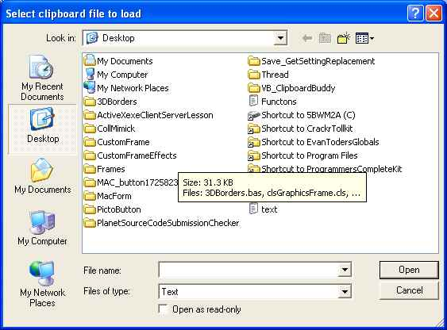

Main Features of VB_ClipboardBuddy
* Abiltiy to save and/or load as many clipboard files as you wish
* Several built in, often used, VB funtions
- Select Case (you choose the number of "Case ="
- If...End If
- If..ElseIf..End If (you choose the number of "ElseIf(s)"
- For I =
- Do..Loop
- While..Wend
* Program stays hidden off the left edge of your screen so its out of the way
* When the program is in full view, its fully visible when the mouse is over it, but transparent, otherwise
* A simple click or keypress sends the desired text to you application
=================================================================================
HOW TO USE VB_ClipboardBuddy
When you first start VB_ClipboardBuddy, after a 1 second pause, you will
see the dialog box below.
One of the features of VB_ClipboardBuddy is the ablity to save and load
as many "clipboard" files as you wish.
If this is your first time running VB_ClipboardBuddy, then your not
going to have any clipboard files to load so press "cancel"

Next, the program will slide off to the left edge of the screen, 99% out of view.
Move the mouse over the purple strip showing and the program will scroll out for you to use.

MENU OPTIONS:

-Load clipboard file : allows you to load any saved clipboard files
-Clear all clipboard data : any clipboard data currently loaded in the program is cleared
(this doesn't delete the clipboard file, if there is one associated with current clipboard contents)
-Show clipboard contents in label : displays the first 40 characters of each clipboard in
its associated label acting as a reminder to you of each clipboards contents
-Show clipboard numbers in label : Shows "Clipboard 1" "Clipboard2" etc
-Enable showing of msg dialogs : if you have disabled any info dialogs, this option reenables them
MENU SENDSPECIAL

All the options in this menu allow you to send functions, commongly used in VB,
conveniently, quickly, and easily to your VB app
Clicking the menu item "SendData" causes the program to send contents of currently
active clipboard to the next app that you give focus to by clicking on

===========================================================================
If you have any questions or comments, or if you have suggestions for improvement
please notify us by either emailing mrsnowlover@yahoo.com or
call us toll FREE at 1-877-772-2243